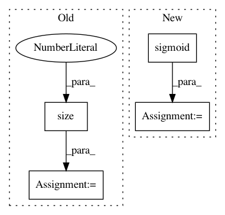

fcea9fee573e854177b4b9af1cfd1b20029ed21e,models/common/char_model.py,CharacterModel,forward,#CharacterModel#Any#Any#Any#Any#Any#,25
Before Change
def forward(self, chars, chars_mask, word_orig_idx, sentlens, wordlens):
embs = self.dropout(self.char_emb(chars))
char_reps = self.charlstm(embs, wordlens, hx=(self.charlstm_h_init.expand(self.args["char_num_layers"], embs.size(0), self.args["char_hidden_dim"]).contiguous(), self.charlstm_c_init.expand(self.args["char_num_layers"], embs.size(0), self.args["char_hidden_dim"]).contiguous()))[0]
// attention
weights = torch.sigmoid(self.char_attn(self.dropout(char_reps))).masked_fill(chars_mask.unsqueeze(2), 0)
weights = weights.transpose(1, 2)
res = weights.bmm(char_reps).squeeze(1)
res = tensor_unsort(res, word_orig_idx)
After Change
char_reps = self.charlstm(embs, wordlens, hx=(self.charlstm_h_init.expand(self.args["char_num_layers"], batch_size, self.args["char_hidden_dim"]).contiguous(), self.charlstm_c_init.expand(self.args["char_num_layers"], batch_size, self.args["char_hidden_dim"]).contiguous()))[0]
// attention
weights = torch.sigmoid(self.char_attn(self.dropout(char_reps.data)))
char_reps = PackedSequence(char_reps.data * weights, char_reps.batch_sizes)
char_reps, _ = pad_packed_sequence(char_reps, batch_first=True)
res = char_reps.sum(1)
res = tensor_unsort(res, word_orig_idx)
In pattern: SUPERPATTERN
Frequency: 3
Non-data size: 4
Instances
Project Name: stanfordnlp/stanza
Commit Name: fcea9fee573e854177b4b9af1cfd1b20029ed21e
Time: 2018-10-11
Author: qipeng@users.noreply.github.com
File Name: models/common/char_model.py
Class Name: CharacterModel
Method Name: forward
Project Name: rusty1s/pytorch_geometric
Commit Name: 17aafdea24122bbb777f71a8ea7c2505e3fee84c
Time: 2019-03-15
Author: matthias.fey@tu-dortmund.de
File Name: torch_geometric/nn/models/autoencoder.py
Class Name: GAE
Method Name: reconstruction_loss
Project Name: Zhaoyi-Yan/Shift-Net_pytorch
Commit Name: da118def7bfda6cf2536af1511466bb23a54b145
Time: 2018-12-14
Author: you@example.com
File Name: models/modules/denset_net.py
Class Name: DenseNet
Method Name: forward